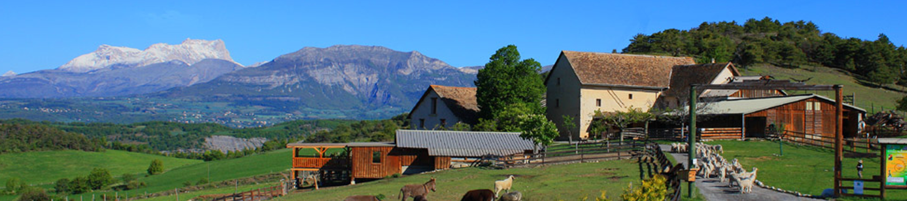

Nihil est enim virtute amabilius, nihil quod magis adliciat ad diligendum, quippe cum propter virtutem et probitatem etiam eos, quos numquam vidimus, quodam modo diligamus. Quis est qui C. Fabrici, M'. Curi non cum caritate aliqua benevola memoriam usurpet, quos numquam viderit? quis autem est, qui Tarquinium Superbum, qui Sp. Cassium, Sp. Maelium non oderit? Cum duobus ducibus de imperio in Italia est decertatum, Pyrrho et Hannibale; ab altero propter probitatem eius non nimis alienos animos habemus, alterum propter crudelitatem semper haec civitas oderit. Nec vox accusatoris ulla licet subditicii in his malorum quaerebatur acervis ut saltem specie tenus crimina praescriptis legum committerentur, quod aliquotiens fecere principes saevi: sed quicquid Caesaris implacabilitati sedisset, id velut fas iusque perpensum confestim urgebatur impleri. Utque aegrum corpus quassari etiam levibus solet offensis, ita animus eius angustus et tener, quicquid increpuisset, ad salutis suae dispendium existimans factum aut cogitatum, insontium caedibus fecit victoriam luctuosam.